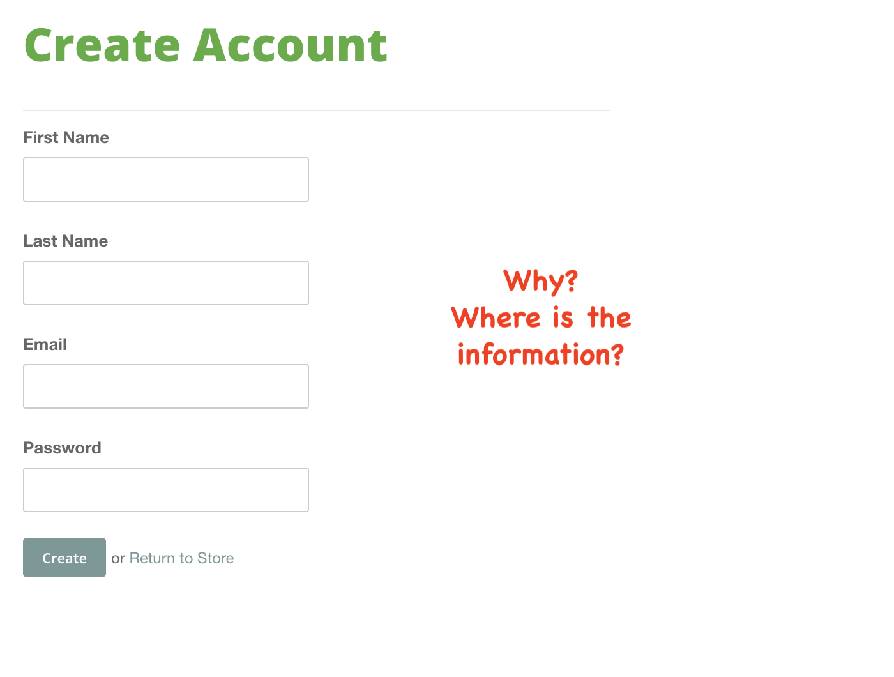

Analyze for Usability
What is the purpose of the site?
In this website, Dr. Randall is an advocates for self-help and he is wanting to help people in a similar situation he was once in. Utilizing from his own personal experience, he has wrote a book and in need for an audiance.
Doctor Randall's motto, "You have to believe it before you can see it."
What criteria are you using to analyze the site?
I will be comparing a similar self-help site to show you there are good sites that are legitimate and bad sites, that are scams or threats to your computer's safety.
Here is the good site, called Tiny Buddha. I am not saying this is the best self-help site EVER! This is NOT my goal. However, my goal is to give you advice on what to look out for when you are browsing sites.
The bad:
I can see a huge difference when comparing both self-help websites. My first impression with my working site is that it’s lacking design and that comfortable welcoming atmosphere we are wanting. His website is more of an advertisement for his services rather than expressing how he can help people. He created an Account page that wants your information but does not describe any details on the information we would be receiving.
The Good:
The Tiny Buhudda site sends that authenticity vibe, it has working navigation headers with assumable clickable links. It also has recommended self-help articles for readers with specific needs or goals that are non-relating to the author. There is also a community forum and an account page that describes what kind of emails we would receive. Lastly, if you ever wonder about a sites creditbilty check to see if they have social media icons AND if they are clickable!
Also, listed below are a few criteria questions
- Are navigational elements clear?
- Do I know what I'm looking at on each page?
- Is content presented with clear hierarchies?
- Can I see if there is more content if I scroll down?
- What is working and what is not working currently on the site?
- How could the site be improved?
I noticed he does not have a contact page but does list his address but with no contact numbers. However, he does list his personal number’s in his service page. They are clearly listed at the top and each appear to be functional. It does list common sections such as about us, team and his services.
His homepage at first glance is not professional. If were actively seeking self-help, I would not investigate his website or services. I do notice he has added a section with a summary about himself called About Us in the footer of every page. This is also repeated in his About Us page as the main heading. See below
His message being “self-help" is presented clearly, in my opinion his approach screams desperate. His content is not structured well, meaning it’s all over the place, with no section headings expressing his goals. I feel as though I’m reading a children’s book with clumps of paragraphs, some of those not correctly spaced (see figure 1.2). He has some content highlighted and underlined making me believe it’s a clickable link, which in fact it’s not. He also lists a few questions for the viewers. See figure 1 below.
There is little content on this multi-page website. He also repeats information already mentioned in other pages.
The page loads at a normal speed has functioning navigation links. I did notice on his customer login page he has a Return to store link which does not direct you to the store but to the homepage. On the footer of each page has payment icons that do not function. See picture below.
The site I am analyzing needs structure with headings on each page describing his goals. He needs to list his background and why readers should purchase his services. He needs to have a testimonial page because how can we believe he is not just a scam.
His site needs design such as bootstrap with informative sections that showcases his performance. It would also be nice to have a footer with social media links making him and his work believable. Also not add icons that are not clickable.